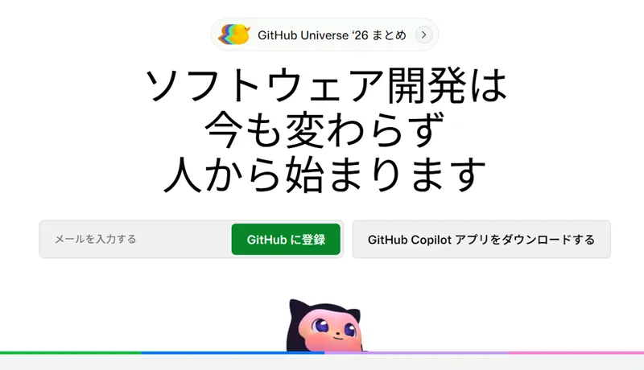

無料＆広告なし！ドラッグ＆ドロップで自分のホームページを公開する手順と魅力
「無料かつ広告なしのサーバーでWebサイトを公開したい！」
そんな手書きHTML派の方におすすめなのが、ソフトウェア開発プラットフォーム「GitHub」が提供している無料ホスティング機能「GitHub Pages（ギットハブ ページズ）」です。
📷 GitHub公式サイト

無料のレンタルサーバーは広告が表示されたりFTPの設定が難しかったりしますが、GitHub Pagesなら無料・広告なし・ブラウザからのドラッグ＆ドロップだけで自分のサイトをインターネット上に公開できます！
それでは、実際にWebサイトを公開するまでの流れを見ていきましょう！
まずはGitHub公式ページにアクセスし、アカウントを登録します。
画面の指示に従い、ユーザー名・メールアドレス・パスワードを入力して「検証」を完了します。「Create account」をクリックすると登録したメールアドレスに確認用コードが届くので、それを入力すれば登録完了です。
https://ユーザー名.github.io/...）になります🐾
アカウントができたら、Webサイトのファイルを保存する場所となる「リポジトリ（保管庫）」を作成します。
GitHubにログインし、画面内の「New repository（新しいリポジトリ）」をクリックして設定画面を開き、以下の項目を入力・選択します。
my-website）これもサイトのURLの一部になります。最後に画面の一番下にある「Create repository」ボタンをクリックすればリポジトリが作成されます。
index.htmlなど）がある場合、GitHub側の初期ファイルとデータが衝突して競合エラーが起きやすくなります。最初から作成済みのサイトをあげる場合はチェックを入れないのが安全です🐾
作成したリポジトリに、Webサイトのファイル（index.html など）を入れます。
リポジトリ作成後の画面にある「uploading an existing file」という青いテキストリンクをクリックします（目立つアイコンではなく小さめの文字なので探してみてください）
するとドロップエリアが表示されるので、パソコン内にあるWebサイトのファイル一式をドラッグ＆ドロップして配置し、画面下部にある緑色の「Commit changes」ボタンをクリックします。
ファイルをアップロードしたら、いよいよWebサイトとして公開する設定を行います。
main（または master）を選択
/ (root) のままでOK
設定を保存してから数十秒〜数分経つと、サーバーへの配置が完了します。
あなたのサイトのURLは以下のようになります。
ブラウザで上記URLにアクセスし、無事に自分の個人サイトが表示されたか確認してみましょう！
サイトの掲載内容を修正したいときも、とても簡単です。
「画像や音楽・動画ファイルをたくさん載せるので、無料枠の容量が心配……」という方におすすめなのが「Organization（組織）機能」です。
これは本来チーム開発用の機能ですが、個人が1人で作成して運用しても規約上まったく問題ありません。Organizationを1つ作成するごとに、アカウントを増やすことなく独立した500MBの追加容量（リポジトリ群）を確保できます。
すでに作成した個人リポジトリも、設定画面から数クリックで新規のOrganizationへ移動できるため、後からデータが増えた場合もアップロードし直す必要がありません🐾
GitHubにファイルをアップロードすると、過去の更新履歴（コミット）がすべて保存されます。
そのため、「コードを崩してしまったので前の状態に戻したい」「うっかりローカルの元データを消してしまった」という万が一の事態でも、履歴を辿って過去の状態を復元することが可能です。
GitHubにファイルをアップロードすると、テキストファイル（HTML/CSS/JavaScriptなど）や圧縮の余地があるデータは、内部システムによって自動的に強力圧縮されて保存されます。
そのため、「ローカル（自分のパソコン）にあるフォルダのサイズ」よりも「GitHub上のリポジトリ容量」の方が小さく表示されることがありますが、異常ではなく正常な挙動ですのでご安心ください！
管理画面が英語表記である点に最初は少し戸惑うかもしれませんが、一度慣れてしまえばこれほど快適で頼もしい無料サーバーはありません。
「完全無料で、広告なしの綺麗な個人サイトを作りたい！」という方は、ぜひGitHub Pagesでのサイト公開に挑戦してみてくださいね🐾